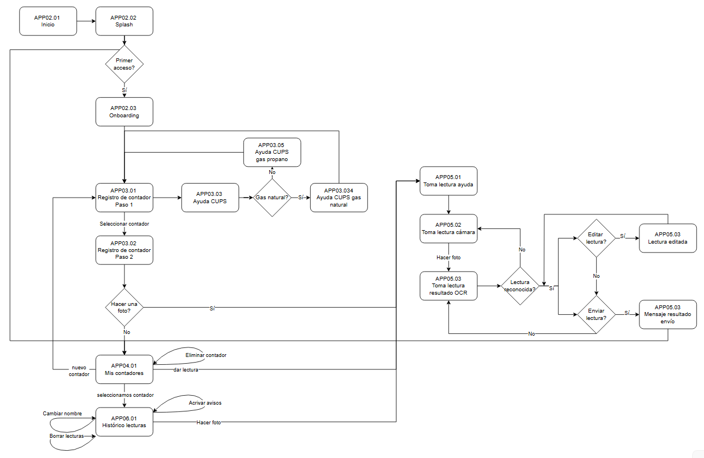

Se requiere una renovación tecnológica de la aplicación móvil Yo Leo Gas de forma que no se modifique la funcionalidad existente en la actual app y además que haya una única versión para Android y para IOS.
Los sistemas que intervendrán serán los siguientes:
app YoLeoGas → aplicación móvil desde donde se realizan las lecturas de contador y que contiene una base de datos local donde se guardan estas lecturas
Zeus → sistema de Nedgia donde están registrados todos los CUPS de gas de la distribuidora y sus lecturas
OCR → sistema que a partir de una imagen de contador saca la lectura numérica
Backoffice → sistema que contiene la información de todas las lecturas que se han realizado desde la app y su ciclo de vida
Plataforma notificaciones push (Pushwoosh/Firebase)→ sistema que gestiona el envío de las notificaciones push
Blob Storage → sistema donde se guardan todas las fotografías de contador
La app se integra con Zeus, el OCR, el Backoffice , la plataforma de notificaciones push (Pushwoosh/Firebase) y el Blog Storage.
Con ZEUS para:
Validar si un CUPS pertenece a la distribuidora Nedgia
Con el OCR para:
Enviar la imagen de contador de gas para que el OCR la procese
Obtener el estado de la imagen enviada
Con el Backoffice para:
Obtener el estado de las lecturas
Registrar un nuevo contador de gas
Consultar todos los contadores registrados
Actualizar la información de un contador registrado
Eliminar un contador registrado
Obtener los parámetros de configuración del sistema, incluyendo umbrales de confianza OCR por dígito y configuración de revisiones.
Con la plataforma de notificaciones push para:
Registro de dispositivos para el envío de las notificaciones push
Con el Blob Storage
Para almacenar la fotografía realizada del contador
Recupera la fotografía realizada del contador
N/A
El modelo conceptual de las entidades de la aplicación móvil es:

PANTALLA | DESCRIPCIÓN |
|---|---|
APP02.1 - Inicio | Se muestra al abrir la aplicación |
APP02.2 - Splashscreen | Se muestra mientras se carga la aplicación |
APP02.3 - Onboarding | Pantalla de ayuda donde se explican las funcionalidades de la aplicación móvil |
APP03.1 - Registro contador paso 1 | Pantalla donde se introduce el NIF o el CUPS para identificar el contador |
APP03.2 - Registro contador paso 2 | Pantalla donde se pone nombre al contador seleccionado tras identificar el NIF o el CUPS |
APP03.3 - Ayuda CUPS | Pantalla de ayuda para encontrar el CUPS en una factura según el tipo de gas contratado |
APP03.4 - Ayuda CUPS gas natural | Pantalla de ayuda si el CUPS en una factura de gas natural |
APP03.5 - Ayuda CUPS gas propano | Pantalla de ayuda si el CUPS en una factura de gas propano |
APP04.1 - Mis contadores | Pantalla que muestra todos los contadores que se han registrado en el dispositivo donde está instalada la aplicación móvil |
APP05.1 - Toma lectura ayuda | Pantalla informativa para tomar la foto correctamente |
APP05.2 - Toma lectura cámara | Pantalla para tomar la foto del contador, ya sea de forma automática o manual |
APP05.3 - Toma lectura resultado | Pantalla donde se muestra la lectura que el OCR ha reconocido a partir de la imagen del contador |
APP06.1 - Histórico lecturas | Pantalla que muestra todas las lecturas realizadas para el contador seleccionado. |
FUNCIONALIDAD | |||||
PANTALLA | NU_02 - Onboarding | NU_03 - Registro de contador | NU_04 - Mis contadores | NU_05 - Toma de lectura | NU_06 - Histórico de lecturas |
APP02.1 - Inicio | X | ||||
APP02.2 - Splashscreen | X | ||||
APP02.3 - Onboarding | X | ||||
APP03.1 - Registro contador paso 1 | X | ||||
APP03.2 - Registro contador paso 2 | X | ||||
APP03.3 - Ayuda CUPS | X | ||||
APP03.4 - Ayuda CUPS gas natural | X | ||||
APP03.5 - Ayuda CUPS gas propano | X | ||||
APP04.1 - Mis contadores | X | ||||
APP05.1 - Toma lectura ayuda | X | ||||
APP05.2 - Toma lectura cámara | X | ||||
APP05.3 - Toma lectura resultado | X | ||||
APP06.1 - Histórico lecturas | X | ||||